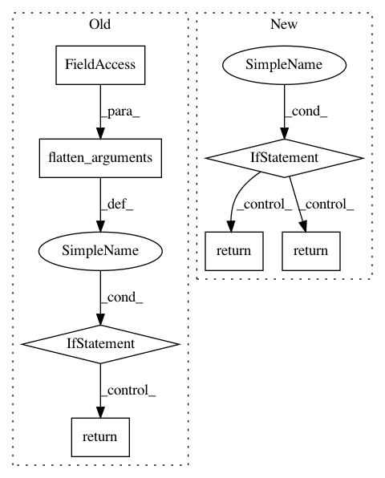

818492efd4238bd8fedcff105bd46044a714f762,pymanopt/autodiff/backends/_pytorch.py,_PyTorchBackend,compute_gradient,#_PyTorchBackend#,71
Before Change
@Backend._assert_backend_available
def compute_gradient(self, function, arguments):
flattened_arguments = flatten_arguments(arguments)
if len(flattened_arguments) == 1:
def unary_gradient(argument):
torch_argument = self._from_numpy(argument)
torch_argument.requires_grad_()
function(torch_argument).backward()
return self._sanitize_gradient(torch_argument)
return unary_gradient
def nary_gradient(arguments):
torch_arguments = []
for argument in flatten_arguments(arguments):
torch_argument = self._from_numpy(argument)
After Change
torch_arguments.append(torch_argument)
function(*torch_arguments).backward()
return self._sanitize_gradients(torch_arguments)
if len(arguments) == 1:
return unpack_singleton_iterable_return_value(gradient)
return gradient
@Backend._assert_backend_available
def compute_hessian_vector_product(self, function, arguments):
def hessian_vector_product(*args):
In pattern: SUPERPATTERN
Frequency: 3
Non-data size: 7
Instances
Project Name: pymanopt/pymanopt
Commit Name: 818492efd4238bd8fedcff105bd46044a714f762
Time: 2020-02-01
Author: niklas.koep@gmail.com
File Name: pymanopt/autodiff/backends/_pytorch.py
Class Name: _PyTorchBackend
Method Name: compute_gradient
Project Name: pymanopt/pymanopt
Commit Name: eac38dbe9694bdfa6c2050528d8cc6a64747e933
Time: 2020-02-01
Author: niklas.koep@gmail.com
File Name: pymanopt/autodiff/backends/_autograd.py
Class Name: _AutogradBackend
Method Name: compute_gradient
Project Name: pymanopt/pymanopt
Commit Name: 4a28bbf9659d96e15f0f241bcab76381e299097c
Time: 2020-02-01
Author: niklas.koep@gmail.com
File Name: pymanopt/autodiff/backends/_tensorflow.py
Class Name: _TensorFlowBackend
Method Name: compute_gradient